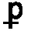
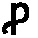

Glossary
Abbreviation Character The code in the type of an <expan> tag. This code stands for the abbreviation or contraction symbol in the text and imitates the look of what we see in the text at the point of the abbreviation. For example, in b<expan type="o+_">on</expan>d , the character ō is what appears in the text in the word bōd . The ō is not an accented o with a macron over it but an abbreviation. A new type is needed to represent that character but no accepted standard yet exists for abbreviation characters. LEME uses a coded imitation of the shape of the abbreviation character: o followed by the superscript marker (+) of an underscore (_). The commonly used abbreviation or contraction codes for Early Modern printed books include:
| Abbreviation Character in Text | Code | Expansion |
|---|---|---|
| ā | a+_ | an or am |
| ē | e+_ | en or em |
| ī | i+_ | in or im |
| ō | o+_ | on or om |
| ū | u+_ | un or um |
| w t | w+t | with |
| y e | y+e | the |
| y t | y+t | that |
| y u | y+u | thou |
|  | p- | per or par |
|  | ,p | pro |
| 9 | 9 | us |
| 4 | 4 | rum |
Alston : Entry number in R. C. Alston's A Bibliography of the English Language to 1800 (1965-)
analyzed lexicon : See lexicon
bilingual lexicon : See lexicon
catchword : "The first word of the following page inserted at the right-hand lower corner of each page of a book, below the last line" (OED). LEME transcriptions do not normally record catchwords.
colophon : "The inscription or device, sometimes pictorial or emblematic, formerly placed at the end of a book or manuscript, and containing the title, the scribe's or printer's name, date and place of printing, etc." (OED)
concordance : A dictionary of the different words in a single book. It normally is an alphabetical index of different headwords, each word-entry followed by at least a brief illustrative quotation and a reference citation of its location in that text. John Marbeck’s concordance (1550) adds to these elements a Latin translation of the headword from the Vulgate, and a final cross-reference to similar headwords found elsewhere in the concordance.
character abbreviation : see expansion
character set : the letters, numbers, and special characters in LEME are encoded in UTF-8 (Unicode)
contraction : see expansion
definition or logical definition an explanation of a thing, normally specifying its species and those essential features that differentiate the thing from other members of its species
definition, lexical an explanation of a word's meaning or sense, normally specifying enough information to identify the thing that the word names
display : the representation of a lexical text
dittography : "the unintentional repetition of a letter or word, or series of letters or words, by a copyist" (OED)
EMEDD : Early Modern English Dictionaries database (1996-2007)
emendation : an editorial correction of an error usually made by the compositor or scribe. LEME retains the error within a tag that surrounds the correction
encoding : see source encoding
encyclopedic-lexical : see lexical encyclopedia
entity reference : a conventional notation in SGML and XML used to represent a special character that may not be found on a standard keyboard
errata : a list of corrections to errors in a printed text
error : editorial emendation, normally of a printer's mistake (not a correction of fact or interpretation)
expansion : the writing out of a sequence of characters that have been abbreviated or contracted
explanation : the post-headword or post-lemmatic part of word-entry that gives a definition, a synonym, a corresponding term in another language, or some other comment
expression : a word, phrase, or sentence that is either cited as such or that appears in a language that differs from its context
form : the principal initial term in a word-entry, and what is named by the post-lemmatic segment. The editorially-made modern headword is created from the form. See also sub-form
full word entry : see word entry, full
hanging word : a word at the end of a line that is suspended in the line above or below it
hard word : a word borrowed from another language, an invented word, or a term of art that has yet to be absorbed into the mother tongue
headword : the term by which a word-entry is sorted in an alphabetical or topical lexicon
headword, modernized : an editorial headword, encoded anywhere in a word-entry, that puts an inflected, old-spelling, or variant word-form into a modern-spelling form called a lemma. Nouns are encoded by the nominative singular inflection, and verbs by the infinitive form.
imprint : the printer and the publisher of a book
incipit : the first line of a manuscript
lemmatized headword : see headword, modernized
lexical encyclopedia : a lexical text whose word-entries describe things in the world more than explain the words that denote or name them
LEXICONS : menu on Welcome Page. This allows a reader to choose ways of browsing an index of the lexical works in the Early Modern period, by LEME Id, author, title, date, and subject.
lexicon : a text with lexical content, whether organized formally into word-entries or distributed through running text as definitions or explanations of words or things
lexicon genre : the type of lexical work, one of multilingual dictionary, glossary, or vocabulary, English dictionary or glossary, grammar, hard-word and term-of-art dictionary or glossary, indexes of proper and place names, spelling texts, and treatises (without an explicit lexical structure)
lexicon subject : the content of a lexical work, such as herbs, the sea, the law, medicine, and so on
lexicon, analyzed : a lexical text that has had its headwords editorially-lemmatized and that has been encoded by headword, explanation, sub-headwords, sub-explanations, cross-references, quotations, and other features. This analysis makes possible the searching of lexical works by their features, such as their lemmatized headwords, and by the position of words to be retrieved
lexicon, bilingual : a lexical text with word-entries that display its forms in one language, and its explanations in another language
lexicon, displayable : a lexical text whose transcription can be viewed, page by page, word-entry by word-entry. Only analyzed lexicons can be displayed.
lexicon, polyglot : a lexical text with word-entries that display their forms in one language, and their explanations in two or more different languages
lexicon, unanalyzed : a lexical work that may be searched within LEME but that cannot be searched with restrictions or be displayed, page by page, entry by entry
ligature : joined letters, such as æ
modern headword : see headword, modernized
normalized headword : see headword, modernized
page text : parts of a lexical text that are not encoded as word-entries, such as an introduction
part of speech (English) : abbreviation, adjective, adverb, affix, conjunction, determiner or article, exclamation or interjection, noun, number, place name, preposition, pronoun, proper name, relative, and verb
pointing : punctuation marks
polyglot lexicon : see lexicon
post-lemmatic segment : the explanatory part of a word-entry
running title : a short title or heading found at the top of a page that does not divide the text into different sections. LEME transcriptions do not record running titles.
Schäfer : entry number in Jürgen Schäfer's Early Modern English Lexicography (1989)
signature : "A letter or figure, a set or combination of letters or figures, etc., placed by the printer at the foot of the first page (and frequently on one or more of the succeeding pages) of every sheet in a book, for the purpose of showing the order in which these are to be placed or bound" (OED). . LEME transcriptions encode but do not transcribe signatures.
soft hyphen (­ or ­) : an entity reference that indicates a break in a word over a line-break (distinguished from a hard hyphen, which indicates a compounding)
source encoding : mySQL-like tags in LEME transcriptions mark the parts of word-entries, and other features of texts, so as to facilitate their searching and retrieval
special characters : see entity reference
spelling list : a lexical text that lists English words either for inventorying the vocabulary of a language or for standardizing orthography
static database : where a user moves through the database by hand looking for an item rather than asks a program’s search function to find the item
sub-form : the principal initial term in a sub-entry, usually a phrasal construction that includes the form, or an inflection of the form
term of art : an Early Modern English expression for a word that belongs to a professional or occupational register and may not be widely known to speakers at large
text type : printed book or manuscript
transcription source : the edition or the manuscript used as the basis for a LEME transcription of a lexicon text
treatise : a lexical genre of works that explains or defines or comments on words or things in running prose or marginal notes rather than in explicitly structured word-entries
unanalyzed lexicon : see lexicon
vocabulary : a collection of words or word-entries for language, a given subject, or a topic
word entry : a headword (lemma) or word-form, accompanied by an explanation (a definition, a synonym, a corresponding term in another language)
word-group : a sequence of word-entries found under an identifying heading, such as an alphabetic letter or a topic name